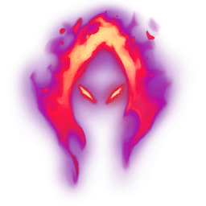

Naafiri Mid
A personalized guide for soup minion#NA1 · Patch 26.13 · July 2026
Every claim in this guide is labeled. VERIFIED = confirmed by 3-vote adversarial fact-checking across independent sources. SINGLE SOURCE = one reputable source, unverified elsewhere. REASONING = derived from current-patch numbers (Riot Data Dragon 16.13.1) + game knowledge; sanity-check in the practice tool. YOUR DATA = from your own match history (59 Naafiri games, season 2026).
YOUR DATA You are already good at Naafiri mid: 62% win rate this season (66% over the last 7 days), 9.5 kills a game, solid damage. Your account sits at Gold 3 because of two leaks, and neither is mechanical: kill participation of ~43% (8 of 28 ranked losses at KP ≤ 32%, including two 0% games), and losses that end at ~27 minutes — faster than your wins. You are not falling off late; you are farming while the map decides the game. Nearly everything in this guide funnels toward one skill: converting your lane advantage into map presence between minutes 8 and 25. Fix that and this champion carries you to Platinum — you've already peaked at Plat 2 this season.
VERIFIED Ability facts below confirmed against the LoL Wiki and Riot's Data Dragon API for patch 26.13. Fun fossil: the 25.06 midscope swapped W and R, and the API still shows it — the ultimate's internal ID is literally NaafiriW.

Packmates spawn and attack whatever you attack. They're your damage multiplier and your Deathfire Touch applicator. They die to AoE — vs mages, they're also your skillshot shields.

Two casts. Q1 applies a bleed; Q2 detonates remaining bleed damage with a bonus that scales off missing health, and heals you against champions. The cooldown doesn't start until Q2 (or the 4s recast window lapses).
FGC translation: Q1 is your fireball — it's the poke and the conditioning tool. Q1 hit → Q2 is your confirm; treat the two as one input the way you'd never drop a combo after a stray hit. Your self-reported "missing Q" problem is a whiff-punish problem: you're throwing Q1 raw at neutral. Throw it when their movement is committed — as they step up to last-hit, during their cast animation, or after you've conditioned a dodge direction with two same-side throws (then aim at the dodge). A whiffed Q1 means your entire offense is on cooldown: back off like you just whiffed a DP.

Summons extra packmates, empowers the pack, and starts a "hunt" window. It has no takedown reset — the 25.06 rework removed that explicitly (its one R interaction: casting R extends the hunt by 1.75s). Use it as your all-in steroid, cast before you commit so the extra hounds join the full route.

Dash + AoE damage in two hits. It's your gap-closer and your only defensive tool.
FGC translation: E is a resource like meter. Dashing in with E is spending your only movement option — if their answer (Zed R, Ahri charm, exhaust) is still up, you've jumped in on a shoto holding down-back. In poke lanes, hold E to dodge the return skillshot after you Q — that's your read-based sidestep. E used aggressively is a hard commit; E held is a reversal threat that changes how they play.

VERIFIED You were right: the takedown reward lives on R. Champion takedown within 7s of casting → a reveal pulse around Naafiri and one free recast within 12s; the recast also grants a 3s shield (100/150/200 + 150% bonus AD). This is the reset engine: kill one target, immediately have a shielded second engage. Stack it with Axiom Arc's ult-CD refund (also takedown-triggered) and a good fight gives you R → kill → free R → kill → half your ult CD already back.
FGC translation: the recast is your okizeme — the first kill isn't the end of the sequence, it's the knockdown. Before you press R the first time, already know who the second target is.
VERIFIED What the current-patch data actually says about mid keystones (Emerald+, patch 26.13):
| Keystone | Status on Naafiri mid | Evidence | |
|---|---|---|---|
 | Electrocute | Most-picked keystone | 53.65% WR, 23.7k games (lolalytics) |
 | Hail of Blades | u.gg's recommended page (Domination + Sorcery: Transcendence/Scorch) | 50.8% WR, 13.5k matches (u.gg) |
 | Deathfire Touch | Real, current, but a niche variant — u.gg lists it only as an alternate "AD" page (paired with Eclipse); Master-tier DFT VODs exist on 26.13 | One u.gg sample: 43.2% WR, 3.1k games |
 | Dark Harvest | Third displayed option | lolalytics |
VERIFIED Deathfire Touch, precisely: re-added in patch 26.9 (April 29, 2026) as a Sorcery keystone. Ability damage or pet damage burns for 1.5–6.53 (+3.5% bonus AD, +1.25% AP) magic damage per 0.5s tick; pet hits refresh a 1s burn, so your hounds keep it rolling constantly — that's the Naafiri hook. But it was nerfed in 26.11: damage changed from adaptive to magic-only, specifically to kill a Black Cleaver synergy. It's weaker for full-AD builds than when you first picked it up.
You run DFT in 38 of 59 games at a personal 62% — you have made a niche page work, and it fits your poke-and-condition style perfectly. Nobody should tell you to drop a winning formula mid-streak. But the aggregate gap (DFT sample 43% vs Electrocute 53.65%) is large enough that it's probably not all sample noise. The experiment worth running: 20 games of Electrocute — you already play it (14 games this season), and it's the lowest-friction switch: same Domination tree as your Electrocute page, same poke pattern, except your Q1 → packmate hits → Q2 already procs it at range. It rewards exactly the trade pattern you already run, but front-loads the damage instead of DoT-ing it. Keep DFT as your comfort pick into heavy-poke mirror lanes where the burn out-values burst.
You said HoB feels stronger but you don't know how to use it in lane. That instinct is right — HoB is an all-in keystone, and the discomfort is because it demands a different game: it does nothing until you commit to autoattack range, which your poke style never enters on purpose.
Think of it as a preplanned combo route off a conditioning read — the throw after they've been conditioned to block. The route:
Adopt it in normals first. Until the AA-weave is automatic, HoB games will feel worse than DFT games — that's execution, not the keystone.
VERIFIED The standard 26.13 mid path — and the one you already build:
| Slot | Item | Why |
|---|---|---|
| Start |  Doran's Blade Doran's Blade | Your standard start; components: Serrated Dirk first back if you can afford it. |
| 1 |  Voltaic Cyclosword (3000g) or Hubris — see §4 Voltaic Cyclosword (3000g) or Hubris — see §4 | Energized proc adds burst to every engage; 56.7% WR, and u.gg/Mobalytics both open with it. |
| Boots |  Gluttonous Greaves Gluttonous Greaves | Standard (both aggregators' path). |
| 2 |  Axiom Arc (2750g) Axiom Arc (2750g) | Ult CD refund on takedown — the other half of your reset engine. 60.1% WR at slot 3-4. |
| 3 |  Serylda's Grudge (3000g) Serylda's Grudge (3000g) | 35% armor pen — the "bruisers become killable" item. Highest-sample 4th-slot pick (57.6% WR / 14.6k games). |
| 4–5 |  Edge of Night · Edge of Night ·  Death's Dance · Death's Dance ·  GA · GA ·  Serpent's Fang Serpent's Fang | Situational — see §5. |
Caveat the verifiers insisted on: 4th/5th-slot win rates are survivorship-biased (games that reach item 4 were already being won). They tell you what's standard, not what causes wins.
REASONING The research verified that both are played first (lolalytics' path opens Hubris, u.gg's opens Voltaic) but no source survived verification explaining when. Here's the reasoning from current-patch tooltips (Data Dragon 16.13.1):
| Voltaic Cyclosword — 3000g |  Hubris — 2800g Hubris — 2800g | |
|---|---|---|
| Stats | 55 AD, 10 lethality, 10 haste | 55 AD, 18 lethality, 10 haste |
| Passive | Energized: ability hit → bonus current-HP physical damage + lethality for 4s. Unconditional — procs on every single engage. | Eminence: takedown → +12 AD (+3 per kill) for 90s. Conditional — literally zero passive value in a fight where nobody dies. |
The trade you're making: Hubris is 200g cheaper and has more raw lethality on its stat line — its "lost kill power" is only the Energized proc. What the proc is worth: it's front-loaded burst attached to your first ability hit, i.e., it helps you kill someone from an even state. Hubris's passive only pays out after the first kill — it makes kill #2 through #5 faster, and with 90s duration it's really a "keep fighting every wave" tempo item.
Voltaic is the default. Buy Hubris over it only when takedowns are already guaranteed — you're 2–3 kills up before your first full item and the lane is unwinnable for them, or the enemy team is fighting you every wave. If you're rushing Hubris while even, you've bought an item whose passive needs kills to work, to get the kills it needs to work — circular, and why it's the snowball pivot, not the standard rush.
How much gold is "an item ahead"? Mid legendaries run 2750–3300g. A solo kill is 300g + ~2 waves the dead laner misses (~250–400g more in CS/XP swing) — call each clean solo kill a ~600g swing. So roughly 3 uncontested solo kills ≈ one item of real advantage, less if they were shutdowns against you. At 2–3 kills up by first back, you're more than half an item ahead — that's the Hubris window: it compounds a lead that already exists.
REASONING No quantified thresholds survived fact-checking (an open question even for the community), so treat this as a calibrated starting point and verify against your own games. Assumes you land the full route (both Q casts — that's the swing factor).
| Your spike | Squishies (mages, ADCs, enchanters) | Bruisers/divers | Tanks |
|---|---|---|---|
| Dirk + Boots (lvl 6–8) | Kill at ≤60–70% HP with full route + keystone; full-HP kill needs their misplay | Only with jungler help | No — don't try |
| Voltaic done (lvl 8–10) | Full-HP kill with R route — this is your license to play assassin | Trade, don't all-in; kill at ≤60% | No |
| + Axiom Arc (2 items) | Kill through Flash (R recast catches the flash) | Killable at ≤75% if you dodge their key spell with E | No |
| + Serylda's (3 items) | Deleted on sight | Now real targets — 35% armor pen is exactly the anti-bruiser stat | Still no. Serylda's slow is for kiting them, not killing them |
Load practice tool, set a dummy to 1800 HP / 60 armor (a mid-game ADC), run your full route with your actual build, watch the damage. Repeat at 2600 HP / 120 armor (a bruiser). Do this once per patch — you'll stop guessing in game. In game, the fast check is Tab: their armor grew faster than your lethality → they've left your kill list; find a squishier target. Naafiri's identity is punishing isolated, squishy targets (verified) — walking past the Renekton to touch the Lux is the whole champion.
REASONING Your poke-until-under-tower pattern is genuinely correct for this kit — here's the structure around it:
YOUR DATA 43% kill participation. Eight losses at KP ≤32%. Losses ending at 27 minutes. Read those three numbers together and the story is: lane won, map lost. This section is the guide's core.
SINGLE SOURCE The verified game plan (Mobalytics, 26.13): start looking for roams after pushing the wave; roaming opens at level 6; play around your ultimate — look for kills whenever R is up; gank bot, then rotate to Dragon.
REASONING The operating system around that:
Every time your wave crashes into their tower, you owe the map a decision — roam, invade with your jungler, deep ward, or hard reset. Standing in lane waiting for the wave to bounce back is the 43%-KP habit. You have ~25 seconds of paid time-off per crash; spend it somewhere every single time, even if "somewhere" is just a river ward and a look at Dragon.
YOUR DATA Your words, and your match history agrees. The pattern in your losses isn't throwing fights — it's kills that buy nothing.
REASONING Kills are currency, not score. After every pick, in the 10 seconds while they're grey-screened, ask: what did this kill just buy? The menu, in order:
SINGLE SOURCE Side-lane and pressure towers; punish lone supports and rotators; you "easily take down squishy champions in the mid game." REASONING Structure it as a loop: push side wave → ward the flank → look mid for a pick with R up → objective on the pick → back to a side lane. Each lap of that loop is 60–90 seconds and each one either gains map or gains gold. The failure mode in your losses is exiting the loop — farming a quiet side lane while the enemy groups 5 and takes mid. If the enemy grouped and you can't get a pick: join your team immediately. A 2-item Naafiri grouped is scarier than a 3-item Naafiri arriving after the fight.
YOUR DATA Pain point #2, and it interlocks with the first: low-KP players arrive at fights late and enter them badly.
REASONING Assassin entry rules, FGC-flavored:
| Stage | What she wants (verified skeleton, single-source) | Your specific focus |
|---|---|---|
| Early (0–8) | Farm, poke, survive to items; roams open at 6; play around R cooldown | Your best phase already — just convert poke into something (kill, plates, or a shove-roam) instead of letting it decay |
| Mid (8–25) | Her prime. Side-lane tower pressure, delete lone squishies/supports, picks with R up, rotate off kills to Dragon/Herald | The KP fix lives here. Run the §8 loop; every wave-crash triggers a map decision |
| Late (25+) | "Falls off a bit as teams group." Grouped flanks near her team, punish rotations, one clean pick ends the game | Don't solo side-lane. One good R + recast on a carry is the win condition — play patient, like holding for one clean punish in round 3 |
Full transparency on the limits of this guide's evidence: